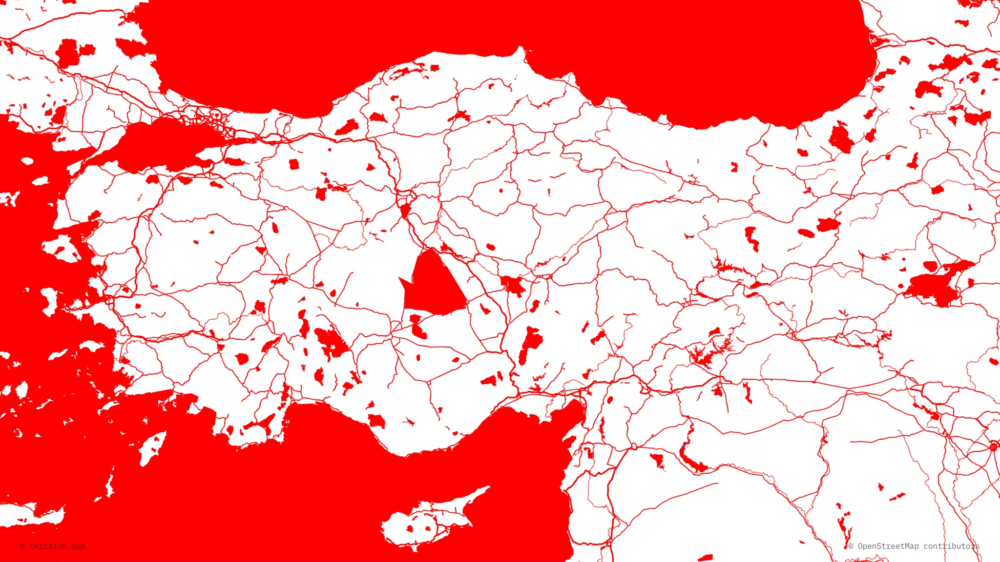
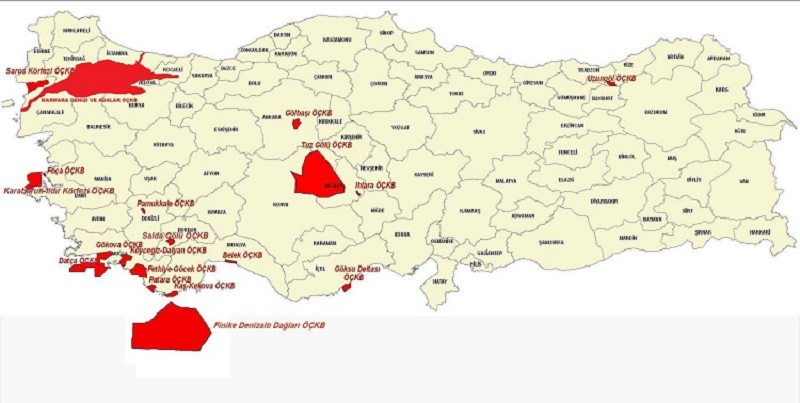

Bir yere gökdelen dikilmesi için imara açılması gerekiyor. İmara açıldığında bile bazı yerler gökdelen bölgesi olmuyor. Buna belediyelerin kent rehberlerindeki uygulama imar planı bölümünden bakabilirsiniz. Mesela en kapsayıcı olanı Çankaya Uygulama İmar Planı. Çankaya imar planı için bu siteye girin ve "Uygulama İmar Planı"nı açın. Eğer imar planı bulamadıysanız yine de imar planında gökdelen bölgesi olamayacak bölgeler haritasına bakabilirsiniz ya da aşağıdaki gökdelensizlik haritalarına bakabilirsiniz.

Gayr-ı resmî Türkiye Cumhuriyeti ve Heliks Federasyonu Gökdelensizlik Haritası

Resmî Türkiye Cumhuriyeti ve Heliks Federasyonu Gökdelensizlik Haritası